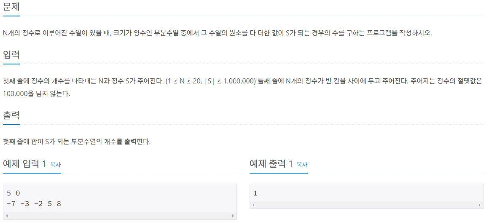
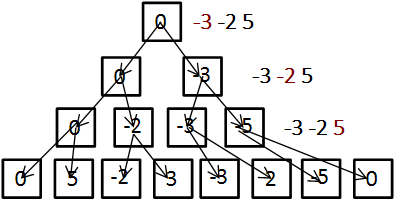
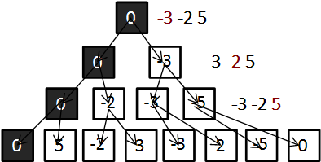

#INFO
난이도 : SILVER2
문제유형 : 백트래킹
출처 : https://www.acmicpc.net/problem/1182
1182번: 부분수열의 합
첫째 줄에 정수의 개수를 나타내는 N과 정수 S가 주어진다. (1 ≤ N ≤ 20, |S| ≤ 1,000,000) 둘째 줄에 N개의 정수가 빈 칸을 사이에 두고 주어진다. 주어지는 정수의 절댓값은 100,000을 넘지 않는다.
www.acmicpc.net

#SOLVE
i번째 수를 더할지 말지 정한 뒤 i+1번째 수를 정하러 들어가는 방식으로 풀이했다.
{-3, -2, 5} 수열을 예시로 들어보도록 하자. 왼쪽은 현재 수를 더하지 않는 케이스 오른쪽은 현재 수를 더하는 케이스이다.
아래 그림과 같이 백트래킹 방식을 이용해 모든 경우를 탐색한 뒤 합이 S가 되는 부분 수열의 개수를 카운트하면 된다.
void recur(int cur, int total){
if(cur == n){
if(total == s) cnt++;
return;
}
recur(cur + 1, total); // 현재 수를 더하지 않는다.
recur(cur + 1, total + arr[cur]); // 현재 수를 더한다.
}
단, s가 0인 케이스는 모든 경우를 선택하지 않는 공집합을 하나 빼 주어야 한다.
int main(void) {
ios::sync_with_stdio(0);
cin.tie(0);
cin >> n >> s;
for(int i = 0; i < n; i++)
cin >> arr[i];
recur(0, 0);
if(s == 0) cnt--; // 공집합 제거
cout << cnt;
return 0;
}
#CODE
#include <bits/stdc++.h>
using namespace std;
int n, s;
int cnt = 0;
int arr[30];
void recur(int cur, int total){
if(cur == n){
if(total == s) cnt++;
return;
}
recur(cur + 1, total); // 현재 수를 더하지 않는다.
recur(cur + 1, total + arr[cur]); // 현재 수를 더한다.
}
int main(void) {
ios::sync_with_stdio(0);
cin.tie(0);
cin >> n >> s;
for(int i = 0; i < n; i++)
cin >> arr[i];
recur(0, 0);
if(s == 0) cnt--; // 공집합 제거
cout << cnt;
return 0;
}